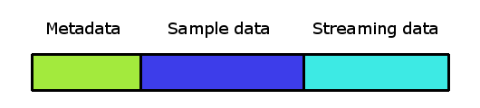

FMOD API User Manual 2.01
The FMOD Studio API allows programmers to interact with the data driven projects created via FMOD Studio at run time. It is built on top of the Core API and provides additional functionality to what the Core API provides.
At the most basic level, this is achieved by creating the Studio::System object and calling Studio::System::initialize on it. You need to do this once when your game starts before you can use FMOD, once the system has been initialized you can start loading banks and creating event instances without having to do any other preparations. A more detailed description of initialization can be found in the FMOD Getting Started white paper.
Instances of Studio::System must be created by calling Studio::System::create. Once created an instance must be initialized with a call to Studio::System::initialize before it can be used. Studio::System::create also creates an FMOD System instance which can be retrieved using Studio::System::getCoreSystem.
Pre-initialization configuration of both the Studio System and the Core System may be performed prior to calling Studio::System::initialize:
The Studio System is shut down and released by calling Studio::System::release, make sure to call this before your game is exited.
FMOD Studio is built on a multithreaded processing model where API calls on a game thread try to be fast by only reading shadow data, writing shadow data, or enqueuing commands to a buffer, while a separate Studio update thread triggered by the mixer asynchronously processes the API commands and performs all the logic required by event playback and automation.
When running in this default asynchronous processing mode, calling Studio::System::update from your game is a fast operation which submits the queued command buffer to the asynchronous thread and performs any asynchronous callbacks due to processing on the Studio update thread.
Studio may also be initialized in synchronous mode with the FMOD_STUDIO_INIT_SYNCHRONOUS_UPDATE flag. When operating in synchronous mode API, calls behave the same but all the processing of queued commands and event playback and automation is performed when your game calls Studio::System::update.
If you do not call Studio::System::update then previous commands will not be executed. While most of the API hides this behavior with use of shadowed variables, it can cause unexpected results if waiting in a loop for Studio::EventDescription::getSampleLoadingState or Studio::Bank::getLoadingState without calling update first.
The FMOD Studio Bank file contains event metadata and sound data in the one file.

Loading a bank will load all metadata, which contains information about all the events, parameters, and other data needed for all events associated with that bank.
The sound sample data has two different types, normal sample data, and streaming sound data. Normal sample data can be loaded per event type. Streaming data is streamed in on demand as events are played, and is never fully loaded ahead of time. Streaming data is good for music, voice over, and other sounds which are of a long duration. Whether sound data is streamed or not is set up by the designer in FMOD Studio and cannot be changed at runtime.
Banks are loaded by calling Studio::System::loadBankFile. They are unloaded by Studio::Bank::unload.
Bank loading can be controlled with the FMOD_STUDIO_LOAD_BANK_FLAGS. When loading banks with FMOD_STUDIO_LOAD_BANK_NORMAL, the function will not return until the bank has completed loading. When using the FMOD_STUDIO_LOAD_BANK_NONBLOCKING flag, the load bank function will return before the bank has completed loading.
As soon as a bank has completed loaded, all the metadata in it can be accessed. This means that event descriptions can be found with Studio::System::getEvent, and instances created from those descriptions. The bank loading state can be queried with Studio::Bank::getLoadingState.
The Strings bank is a special bank which contains the string lookup of event path to GUID. The strings bank functions identically to a normal bank except that it never contains sample or streaming sound data.
Banks can be unloaded by calling Studio::Bank::unload. Unloading a bank will free all sample data, invalidate the events descriptions belonging to that bank, and destroy associated instances.
If the bank containing the sample data was loaded via Studio::System::loadBankMemory then the system must immediately unload sample data when the bank is unloaded. This may lead to playback errors if any instances of events in the bank are still playing. This can occur even if multiple copies of the sample data are loaded from different banks and only one of the copies is being unloaded.
Sample data is loaded from one of the three actions:
For cases where most or all of the events may play at any time, then loading calling Studio::Bank::loadSampleData to load all data up front may be the best approach. Once the bank sample data has loaded, then all event instances can be created or destroyed and use that existing data immediately. However, it does have the highest memory overhead. Repeated calls to Studio::Bank::loadSampleData are reference counted, and the bank's sample data is only unloaded when Studio::Bank::unloadSampleData has been called an equal number of times.
Sample data can be loaded for selected event using Studio::EventDescription::loadSampleData. It is best to load the sample data ahead of time, so that the event's sound sample data is ready when needed. For cases of very common events, the sample data could be loaded for the duration of the game or level. For less common events, the sample data may be loaded in or out as needed. Repeated calls to Studio::EventDescription::loadSampleData are reference counted, and the bank's sample data is only unloaded when Studio::EventDescription::unloadSampleData has been called an equal number of times, or if the entire bank is unloaded.
When either of these reference counts is incremented to one the system begins loading the referenced sample data. The sample data is loaded asynchronously and the loading state may be polled by calling Studio::Bank::getSampleLoadingState or Studio::EventDescription::getSampleLoadingState. Alternatively, you can call Studio::System::flushSampleLoading, which will block until all sample loading and unloading has completed.
When an instance of an event is created by calling Studio::EventDescription::createInstance the system begins loading any non-streaming sample data which is not already loaded or loading. Once again the sample data is loaded asynchronously and the loading state may be polled by calling Studio::EventDescription::getSampleLoadingState. If playback of the instance is started by calling Studio::EventInstance::start before the sample data has finished loading then the instance will stay in the FMOD_STUDIO_PLAYBACK_STARTING state until loading of the sampled data has completed.
The automatic loading of sample data is the simplest approach and uses the least amount of memory. However it has the following disadvantages:
For the case of one-shots, this may mean that the sample data is constantly loaded and unloaded whenever a one-shot plays, which is not a good approach. For these sort of common sounds, it is better to call Studio::EventDescription::loadSampleData so the sample data stays in memory rather than constantly unloading then reloading it.
The three approaches to bank loading can be combined. The sample data will stay loaded for as long as at least of the three conditions are met.
For users who don't explicitly load sample data, sounds will be loaded and unloaded on demand. To help avoid unnecessary file access, there is an idle pool for recently used sounds. When a sound is no longer needed (e.g due to an event instance finishing), its sample data will be placed into the idle pool to be reused later if needed.
By default, the idle pool is set to 256kB in size. This can be customized via the FMOD_STUDIO_ADVANCEDSETTINGS::idleSampleDataPoolSize field.
Start by loading the banks that contain the audio tables. Next, create an instance of an event that contains a programmer instrument. Using this instance, you will be able to register for event callbacks, specifically FMOD_STUDIO_EVENT_CALLBACK_CREATE_PROGRAMMER_SOUND. Using the callbacks you will be able to create and assign sounds from the asset tables.
For localized dialogue, make sure that the required localized bank has been loaded. Ensure that any other localizations on the same bank are unloaded before loading a new localization.
See the FMOD Studio Documentation for more information. Additionally, see the Programmer Sound Studio API Example for source code reference.
An event is an instanceable unit of sound content that can be triggered, controlled and stopped from game code. Everything that produces a sound in a game should have a corresponding event.
An event contains and is composed of tracks, instruments, and parameters. The parameters trigger the instruments, which route audio content into the tracks. The tracks route into other tracks, or into the event's master track; The output of the event's master track routes into the project mixer. In addition, the event's parameters can control and manipulate most properties of the event, of the event's instruments and logic markers, and of effect modules on the event's tracks.
In studio api, typically you will load an Studio::EventDescription from a Studio::Bank. Then you will use the Studio::EventDescription to create an Studio::EventInstance. Then to play the event, you call Studio::EventInstance::start.
FMOD Studio allows the user to specify a callback function to call when various state changes occur in an event instance. See FMOD_STUDIO_EVENT_CALLBACK_TYPE for the full list of callbacks available. The callback can be set automatically for all new instances of an event using Studio::EventDescription::setCallback, or it can be set manually for individual event instances using Studio::EventInstance::setCallback.
Some callbacks may be fired asynchronously on a thread owned by FMOD, depending on Studio initialization flags.
When Studio has been initialized in asynchronous mode (the default mode), callbacks are fired from the Studio asynchronous thread as they occur.
If Studio has been initialized with FMOD_STUDIO_INIT_DEFERRED_CALLBACKS then the FMOD_STUDIO_EVENT_CALLBACK_TIMELINE_MARKER and
FMOD_STUDIO_EVENT_CALLBACK_TIMELINE_BEAT callbacks will be fired from the next call to Studio::System::update.
If Studio has been initialized with FMOD_STUDIO_INIT_SYNCHRONOUS_UPDATE then all callbacks will be fired from the next call to Studio::System::update.
See Also: Callback Behavior
Parameters are used in FMOD Studio to control the behavior of events.
They can exist on an event:
or a global basis:
Audio spatialization is the process of taking an audio file and making it sound "in the world".
See the Studio API 3D Events and Spatial Audio white papers.
Reverb in the FMOD Studio API can be handled in two ways. The sound designer can add reverb effects to the master bus or individual events, and control the levels sent to those effects using Studio. The second approach is to use the core reverb system.
The core system has four user configurable 3d reverbs. Studio event instances can interact with the core reverb system by sending their signal to the core reverbs. The send level can be set with Studio::EventInstance::setReverbLevel and queried with Studio::EventInstance::getReverbLevel.
Each event or bus has a signal path to the master bus. The signal path is composed of all buses that receive signal from the event or bus. This includes any buses on the direct path to the master bus as well as any buses that are targeted by sends.
By default, when an event instance is created, the system ensures that every bus on its signal path has a corresponding channel group. When an event instance is destroyed, the system destroys any channel groups which are no longer required.
You can override the default behavior by calling Studio::Bus::lockChannelGroup. This forces the system to ensure the channel group exists for that bus and each bus on its signal path. The system cannot destroy any of these channel groups until you call Studio::Bus::unlockChannelGroup.